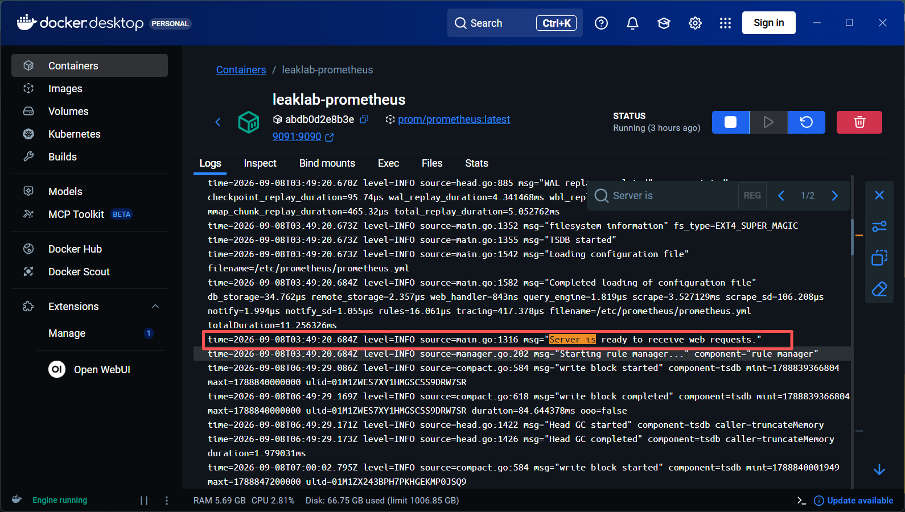
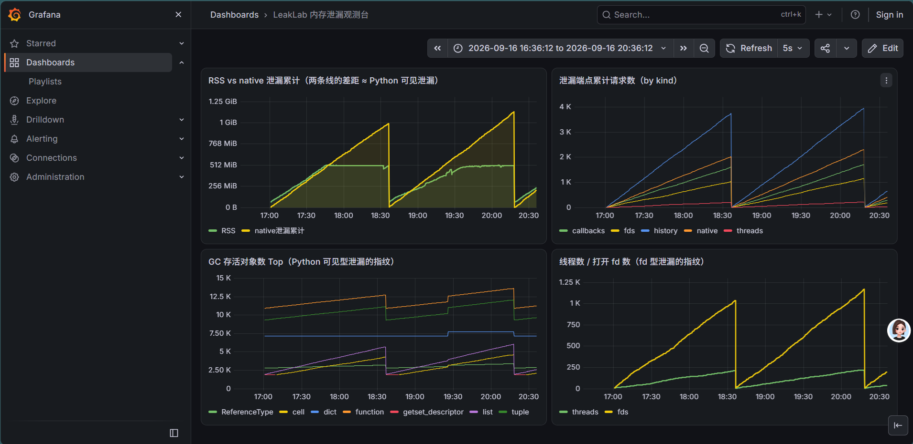
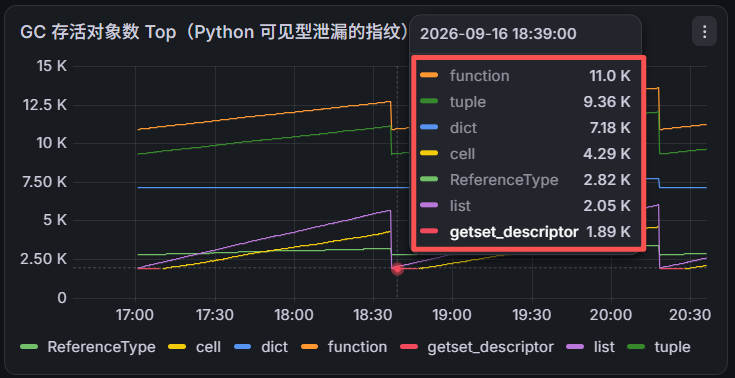
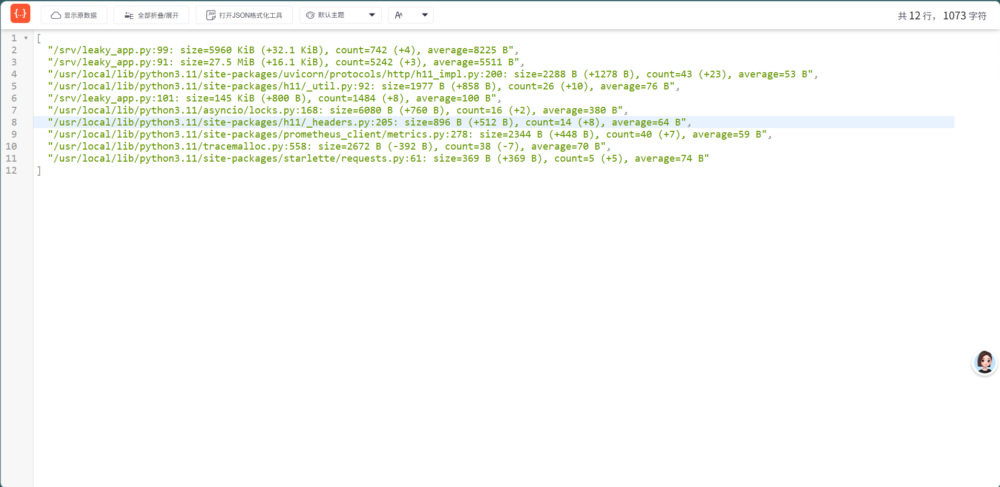
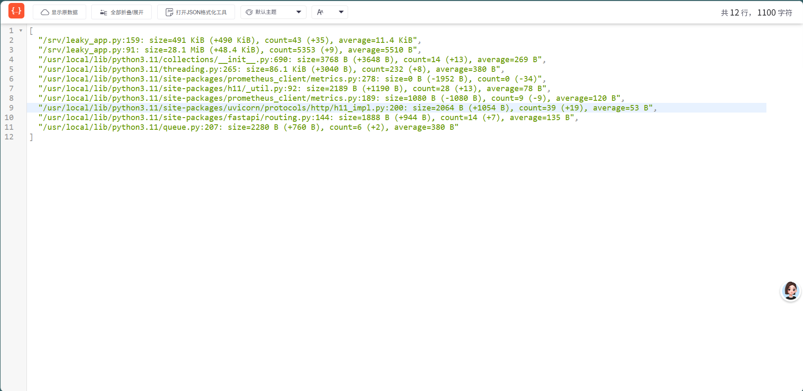
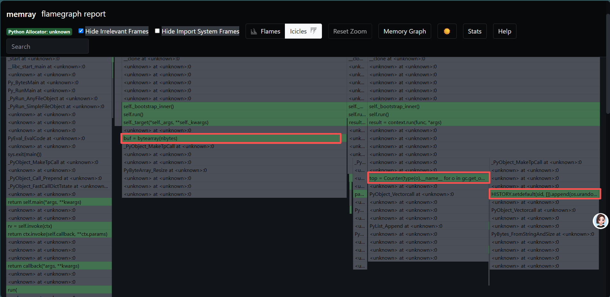
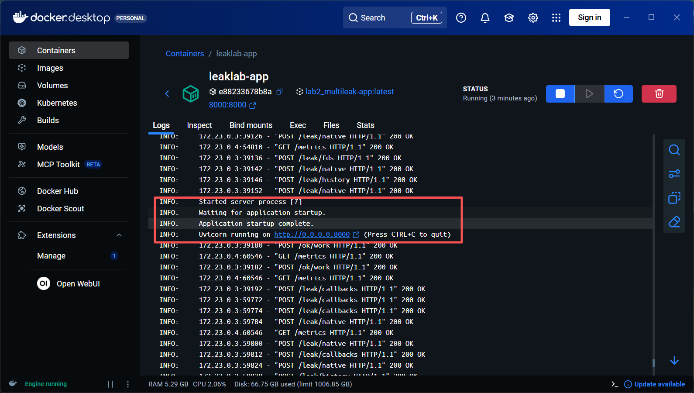
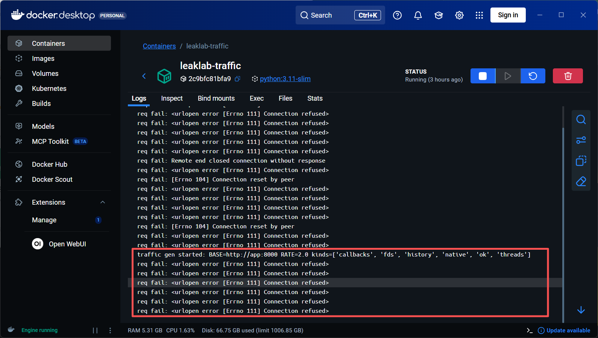
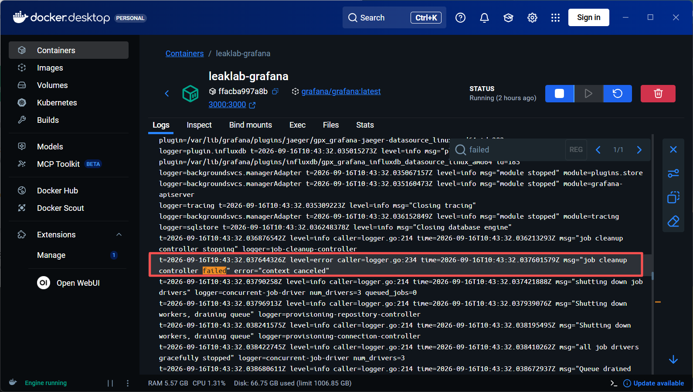

00前言：为什么要搭靶场学排障
面试里内存泄漏的题目通常是这么答的："循环引用、全局容器、资源未关闭……用 tracemalloc、objgraph 排查"。 背得很熟，但追问一句"你实际是怎么查的？"就露馅了：曲线在哪里看？什么形态算泄漏？ 工具输出怎么读？服务挂了现场没了怎么办？宕机一定就是内存泄漏吗？
这些问题没有一个是八股能覆盖的，它们全是操作性问题——只有亲手走一遍才有答案。 于是我搭了这个靶场，目标是把下面这条链路的每一步都真实执行一遍：
部署带泄漏的服务 → 监控上看到异常曲线 → 分流定性 → 定位到具体代码行
→ C 层泄漏线上取证 → 复现 OOM 事故循环 → 事故复盘定性 → 修复验证本教程的三个承诺：
- 可复现：三条命令拉起完整环境（应用 + 流量 + 监控），30 分钟出结果；
- 数据真实：文中所有曲线读数、命令输出、时间线都来自 2026-09-07 至 09-16 的实际运行，无一编造；
- 从 0 到 1：默认读者只懂"Python 有 GC"，不预设任何运维经验——组件是什么、日志在哪看、工具怎么装，全部讲清。
01五分钟一键复现
唯一的前置条件是 Docker Desktop（Windows / macOS / Linux 均可）。 clone 后一条命令拉起全部四个容器：
git clone https://github.com/jerry-166/python-memory-leak-lab.git
cd python-memory-leak-lab/lab2_multileak
docker compose up -d --build
# 首次构建约 2~3 分钟（拉基础镜像 + pip 依赖 + apt 装 gdb/procps）| 入口 | 地址 | 说明 |
|---|---|---|
| Grafana 看板 | http://localhost:3000 → Dashboards → LeakLab | 匿名访问，无需注册登录，四面板看板已自动加载 |
| Prometheus | http://localhost:9091 | 抓取间隔 2s；端口映射为 9091（9090 易被占用，见附录 A） |
| 靶场服务 API | http://localhost:8000/docs | FastAPI 自动文档，可直接试调各端点 |
| 泄漏自检 | curl.exe -s http://localhost:8000/debug/leaks | 一个命令看五块泄漏的实时状态（第 6 节详解） |
起来之后什么都不用做：容器 leaklab-traffic 会自动以 2 req/s 的频率
打击 5 个泄漏端点。你可以盯着 Grafana 看 RSS 慢慢爬坡；也可以先往下读，
大约 30~60 分钟后回来——那时第一个OOMKilled 事故循环已经上演过了
（曲线断崖归零 → 自动重启 → 继续爬）。
第一次跑就盼着 OOM 的话，把 docker-compose.yml 里 traffic 的 RATE: "2" 调到 "10" 再 docker compose up -d traffic，泄漏速度约 5 倍。
02认识组件：四个容器是一条单向数据链
打开 docker compose ps 会看到四个容器。先别研究每个容器内部，
先背下这条数据链——它是后面一切排障逻辑的地图：
零存储
时序库
/metrics
5 个出血点
持续打击
流量发生器
| 容器 | 角色 | 它坏了的现象 |
|---|---|---|
leaklab-app | 靶场服务，埋了 5 种泄漏的 FastAPI 应用（病人） | Grafana 曲线断崖或无数据；traffic 日志报 Connection refused |
leaklab-traffic | 流量发生器，按权重循环打泄漏端点（跑步机） | 曲线变平——没人制造泄漏了，反而"治好"了病人 |
leaklab-prometheus | 时序数据库，每 2 秒主动拉取 app 的 /metrics 存下来（护士） | Grafana 面板全部 No data，但 app 本身活得好好的 |
leaklab-grafana | 纯展示层，自己不存任何数据（读片台） | 打不开 3000 端口，其他一切照常 |
三个关键认知（也是面试常考点）：
-
Prometheus 是 pull 模型[4]——它主动去拉 app，不是 app 推数据。
好处：app 挂了 Prometheus 立刻知道（
up指标变 0），且应用侧完全不需要感知监控系统。 - Grafana 零存储——删掉重建 Grafana 容器，历史曲线一分不丢，数据全在 Prometheus 的卷里。
- 出问题顺着链找断点——浏览器→Grafana→Prometheus→App，逐段验证，不要一上来就重启。
编排这一切的 docker-compose.yml 值得逐行读懂，每一行都有存在理由：
services:
app:
build: ./app
ports: ["8000:8000"]
# memray attach 的底层是 gdb ptrace 注入，需要这个 capability（默认没有）
cap_add: [SYS_PTRACE]
# 内存上限：跑得够久必然被 cgroup OOMKilled（exit 137）并自动重启，
# 完整复现线上"内存爬升 → 被杀 → 重启 → 继续爬"的事故循环
mem_limit: 512m
restart: unless-stopped
traffic:
image: python:3.11-slim
command: python /gen/gen.py
environment:
RATE: "2" # 每秒 2 个请求；想加速泄漏调大这个值
MIX: "history:35,native:20,callbacks:15,fds:10,threads:2,ok:18"
depends_on: [app]
prometheus:
image: prom/prometheus
ports: ["9091:9090"] # 宿主机 9090 常被占用，映射 9091
grafana:
image: grafana/grafana
environment:
# 匿名访问：浏览器直接打开 localhost:3000，无需注册/登录
GF_AUTH_ANONYMOUS_ENABLED: "true"
GF_AUTH_ANONYMOUS_ORG_ROLE: "Admin"
depends_on: [prometheus]每个容器启动成功都有自己的"就绪信号"，Prometheus 的是日志里这行—— 它表示护士已就位开始抄表：

Server is ready to receive web requests.。
同一屏里的 Head GC started/completed、compact blocks 是 Prometheus 自身时序数据的正常压缩，不是异常。03靶场设计：5 种泄漏 × 3 种形态
这个靶场最核心的设计思想是："内存泄漏"不是一个问题，是一类问题。 五个泄漏端点刻意选成三种完全不同的"形态"，因为不同形态的取证工具完全不同—— 用错工具，你连泄漏都看不见。
| 端点 | 泄漏方式 | 形态 | 监控指纹 | 定位工具 |
|---|---|---|---|---|
/leak/history | 全局 dict 会话历史无限膨胀 | Python 可见型 | RSS 爬升 + list 对象数爬升 | tracemalloc 快照 diff |
/leak/callbacks | 回调注册表只进不出（闭包） | Python 可见型 | function / cell 对象数爬升 | tracemalloc / gc.get_referrers |
/leak/threads | 常驻线程持有大缓冲永久阻塞 | Python 可见型 | 线程数 + RSS 爬升 | tracemalloc（指向线程函数行） |
/leak/fds | os.open() 后丢弃 fd 编号 | fd 型 | RSS 几乎不动，fd 数线性爬升 | fd 指标 / /proc/self/fd |
/leak/native | ctypes 调 libc.malloc 不 free | native 型 | RSS 爬升但 tracemalloc 干净 | 只能 memray --native |
/ok/work | 分配后立即释放（对照组） | 无泄漏 | 曲线走平 | —— |
3.1 泄漏一：全局 dict 无限膨胀（最经典的形态）
HISTORY: dict = {} # 模块级全局变量 = GC Root，从它可达的对象永远不回收
@app.post("/leak/history")
def leak_history(body: In):
# os.urandom 每次真实分配新内存（不要写 "x"*n —— 会被编译期常量折叠，见 3.6）
sid = body.session_id or f"s-{time.time_ns()}"
HISTORY.setdefault(sid, []).append(os.urandom(body.size_kb * 1024))
return {"ok": True, "sessions": len(HISTORY)}
这就是所有"缓存用成泄漏"的标准形态：HISTORY 是模块级全局变量，
业务上会话早就结束了，但历史消息还被这个 dict 持有——对象处于可达但无用状态。
注意 GC 在这里没有故障，它 dutiful 地保留了所有合法引用的对象；
泄漏的本质是"意外可达"，不是"GC 失效"。
3.2 泄漏二：闭包注册表只进不出
CALLBACKS: list = [] # 回调注册表，只进不出
@app.post("/leak/callbacks")
def leak_callbacks(body: In):
payload = os.urandom(body.size_kb * 1024)
def on_event(_ev=None):
return payload # 闭包捕获外层变量 —— payload 的生命周期被无限延长
CALLBACKS.append(on_event) # 注册后永远不注销
return {"ok": True, "callbacks": len(CALLBACKS)}
事件监听器、信号处理器、中间件注册——这类"注册了但忘了注销"的代码在真实项目里极常见。
它的对象指纹非常独特：每注册一个闭包，就多一个 function 对象加一个
cell 对象（闭包单元），所以 GC 面板上这两条线会同步爬升——
一眼就能认出来。
3.3 泄漏三：常驻线程持有大缓冲
BLOCK = threading.Event() # 永远不会被 set 的阻塞点
def _stuck_worker(nbytes: int):
buf = bytearray(nbytes) # 大缓冲，被本栈帧持有
n_pages = (nbytes + 4095) // 4096
buf[::4096] = b"\x01" * n_pages # 逐页触碰：确保这些页真实进入 RSS
BLOCK.wait() # 永久阻塞 —— 线程和 buf 都无法回收
@app.post("/leak/threads")
def leak_threads(body: In):
threading.Thread(target=_stuck_worker, args=(body.size_kb * 1024,), daemon=True).start()
return {"ok": True, "threads": threading.active_count()}
线程泄漏的双重代价：每个线程有自己的栈，加上被栈帧持有的大缓冲。
逐页触碰那行注释值得展开：Linux 的内存分配是惰性的，
malloc 只保留虚拟地址，没写过的页不占物理内存——
不逐页写一遍，这个泄漏在 RSS 曲线上根本不显形（我们实测过：native 记账 1GB 但 RSS 只 493MB，
同一个原理）。
3.4 泄漏四：fd 只开不关
@app.post("/leak/fds")
def leak_fds(body: In):
fd = os.open("/dev/urandom", os.O_RDONLY)
del fd # 故意丢弃 fd 编号 —— fd 仍打开，但再也没人能 close 它
return {"ok": True, "fds": fd_count()}
del fd 删掉的只是 Python 里的整数变量，内核里那张 fd 表的条目还开着。
这种泄漏最阴的地方：RSS 几乎不动（fd 表条目只是内核里的小结构），
只盯着内存曲线的人永远发现不了它。真实项目里对应的场景是裸 open()、
忘关的 socket、没归还的数据库连接——最终以 Too many open files 崩溃收场。
3.5 泄漏五：C 层 malloc 不 free
libc = ctypes.CDLL("libc.so.6") # 绕过 Python 直接摸 C 层
libc.malloc.restype = ctypes.c_void_p
@app.post("/leak/native")
def leak_native(body: In):
# C 层 malloc 后既不 free 也不保存指针 ——
# Python GC / tracemalloc 对此完全无感
ptr = libc.malloc(body.size_kb * 1024) # noqa: F841 故意不 free
NATIVE_TOTAL += body.size_kb * 1024 # 自己记账（tracemalloc 看不见，只能手动累计）
return {"ok": True, "native_mb": round(NATIVE_TOTAL / 1024 / 1024, 1)}
这是最能体现"工具分层"的泄漏：numpy/pandas 的 C 缓冲、C 扩展里忘了 free 的指针，
在 tracemalloc 眼里完全隐形——它的钩子只挂在 Python 解释器的分配器上。
指纹是：RSS 狂涨，tracemalloc 追踪量纹丝不动。
唯一的取证工具是 memray 的 --native 模式（第 6.4 节）。
三个"反直觉但面试能讲"的设计细节：① payload 不能写 "x" * n——CPython 会编译期常量折叠，所有请求共享同一块内存，泄漏量缩水 10 倍且 tracemalloc 看不见；② Dockerfile 里用 sh -c "uvicorn ... & wait" 包一层，让 uvicorn 不是 PID 1——memray/gdb attach 对普通进程最稳；③ SYS_PTRACE capability 是 attach 的通行证，默认容器不给。
04预埋观测：让服务自带黑匣子
排查内存泄漏有个残酷的现实：等出事再装工具就晚了。
tracemalloc 只能追踪 start() 之后的分配；进程一死，内存清零，现场全没。
所以靶场把观测能力预埋在代码里——部署即生效，等价于飞机的黑匣子：
# ---------- 预埋 1：进程启动即开启 tracemalloc ----------
# 必须 import 阶段就 start：它只能追踪 start() 之后的分配，开晚了就漏掉已分配的对象
tracemalloc.start(20) # 20 = 每条分配记录保留 20 层调用栈
# ---------- 预埋 2：Prometheus 指标 ----------
G_OBJECTS = Gauge("leaklab_objects", "GC tracked alive objects by type", ["type"])
G_THREADS = Gauge("leaklab_threads", "alive threads")
G_FDS = Gauge("leaklab_fds", "open file descriptors")
G_NATIVE = Gauge("leaklab_native_bytes_total", "native malloc bytes never freed")
C_LEAK = Counter("leaklab_leak_requests_total", "leak endpoint hits", ["kind"])
# 另外 prometheus_client 自动暴露 process_resident_memory_bytes（Grafana 主面板用它）| 端点 | 作用 | 什么时候用 |
|---|---|---|
/metrics | Prometheus 指标（RSS / 对象数 / 线程 / fd / 各端点计数） | 平时由 Prometheus 每 2s 自动拉取，人不用管 |
/debug/leaks | 五块泄漏自检汇总 + traced 与 RSS 差值 | 发现异常后的第一步：分流定性 |
/debug/objects | gc.get_objects() 按类型计数 Top12 | 看对象指纹（哪类对象在涨） |
/debug/snapshot | tracemalloc 双快照 diff | Python 可见型泄漏定位到代码行 |
指标到底是怎么算出来的？
这是很多人似懂非懂的一层。监控指标按采集机制分三类，靶场恰好每类都有—— 理解了分类，任何指标你都能反推它的原理和局限：
| 类型 | 机制 | 靶场里的例子 |
|---|---|---|
| 事件计数型 | 事件发生瞬间 +1，存累计值（Counter） | 各泄漏端点请求计数——所以曲线只增不减 |
| 普查型 | 被问到的那一刻现数一遍（Gauge） | RSS（问内核 /proc/self/status）、fd 数（数 /proc/self/fd 目录）、GC 对象（遍历 gc.get_objects 数类型） |
| 活账型 | 钩子在每笔分配/释放时实时更新余额 | tracemalloc 的 current/peak——C 钩子挂在解释器分配器上逐笔记账 |
普查型指标还有一个隐蔽的测量设计，藏在 metrics() 的第一行：
@app.get("/metrics")
def metrics():
# 每次采样前先强制完整回收 —— 引用计数对象当场死、循环垃圾当场清，
# 所以图上每个点都是"全量 GC 之后"的数字：
# 曲线还在涨 = 涨穿了一次又一次全量回收 = 增长 100% 是强引用对象 = 泄漏铁证
gc.collect()
top = Counter(type(o).__name__ for o in gc.get_objects()).most_common(8)
G_OBJECTS.clear()
for t, n in top:
G_OBJECTS.labels(type=t).set(n)
G_THREADS.set(threading.active_count())
G_FDS.set(fd_count())
G_NATIVE.set(NATIVE_TOTAL)
return Response(content=generate_latest(), media_type=CONTENT_TYPE_LATEST)这个设计的直接后果：GC 面板上看不到"GC 回落"——因为每次普查前垃圾已被清走。曲线涨穿全量回收，比"看到 GC 回收了一部分"是更硬的泄漏证据。真实生产没有强制 collect，你会看到分代 GC 周期性回收造成的锯齿，但泄漏的线会穿过锯齿持续上行——判读方法相同：看趋势，不看单点。
05四个 Grafana 面板怎么看
打开 Grafana（Dashboards → LeakLab），四张面板各回答一个正交的问题。 先看全景再逐个拆：

5.1 第一步永远是：看曲线形态定性
| 形态 | 结论 | 说明 |
|---|---|---|
| 涨到平台期走平 | 不是泄漏 | 缓存预热 / 懒加载完成 / 正常工作集水位。有上界的缓存终会触顶 |
| 无界爬升、跨多次 GC 不回落 | 泄漏嫌疑 | 增长全被合法引用持有。需要继续分流定性（第 6 节） |
| 爬升 → 断崖归零 → 再爬升 → 再断崖 | 泄漏 + OOM 循环铁证 | 断崖 = 进程死亡重启。曲线形态本身就是"病历" |
单点读数永远判不了泄漏，判据是"增长和什么绑定"。缓存/懒加载的增长绑定去重后的 key 数（有限，终会饱和）；泄漏绑定请求总数（无限，永不饱和）。两个可执行判据：① 重放实验——同一份流量打两遍，第二遍不涨的是缓存，照样线性涨的是泄漏；② 查代码上界——"这个量有没有被任何人拍板过上限"（TTL / maxsize / 队列长度），没有拍板上界的"缓存"就是泄漏本身。
5.2 对象指纹：左下面板是"泄漏的 DNA"

把指纹对照表背下来，生产里看到对象曲线就能直接猜到代码模式：
| 对象类型爬升 | 最可能的代码模式 |
|---|---|
function + cell 同步涨 | 闭包 / 回调注册只进不出（监听器、信号、装饰器动态生成） |
list / dict 涨 | 全局容器膨胀（缓存、历史记录、任务队列无上界） |
tuple 涨 | 大量小元组堆积（常与容器膨胀伴生，作为 value 被持有） |
| 全类型齐涨 | 某个"根对象"在膨胀，把整棵对象树都拖住了 |
两个亲手踩过的读图陷阱：① 量纲不同的指标不能共 Y 轴——本看板早期版本把 native 字节数（数亿）和线程/fd 数（几十）放同一面板，后者被压成贴地直线，看起来"恒为 0"；修复后 native 挪到面板一与 RSS 同单位对比（两线差距 ≈ Python 可见泄漏量）。② Prometheus 的 Target health 页面只回答"抓取链路通不通"，UP ≠ 没有泄漏，它只在面板 No data 时才需要看。
06排查剧本：从"曲线不对劲"到"抓到代码行"
曲线定性为泄漏嫌疑后，进入分流排查。整个剧本四步，每步约一分钟，不要跳步—— 用错工具会在 native 泄漏上颗粒无收，在 fd 泄漏上完全失明。
6.1 第 1 步：/debug/leaks 分流定性
curl.exe -s http://localhost:8000/debug/leaks
{"rss_mb":134.0,"tracemalloc_current_mb":17.6,"tracemalloc_peak_mb":18.2,
"leak1_history_sessions":812,"leak1_history_msgs":821,
"leak2_callbacks":233,"leak3_threads":9,"leak4_fds":47,"leak5_native_mb":51.0}| 读数组合 | 结论 | 下一步 |
|---|---|---|
rss_mb 涨、tracemalloc_current_mb 同步涨 | Python 可见泄漏 | 第 2 步：快照 diff |
| RSS 涨、traced 几乎不动，差值持续拉大 | native 泄漏（C 层，tracemalloc 盲区） | 第 4 步：memray --native |
leak4_fds 独自线性涨、RSS 不动 | fd 泄漏（RSS 判不了它！） | 查代码里裸 open()/socket，无需内存工具 |
上面这次真实读数的判读：RSS 134MB 而 tracemalloc 只看到 17.6MB —— 差值就是 native 泄漏的直接证据（当时 native 记账 51MB，其余是解释器基线和碎片）； 同时 fd 数独立爬升，fd 泄漏单独一条线。
6.2 第 2 步：tracemalloc 双快照 diff，定位到代码行
先纠正一个最常见的误解：tracemalloc 不是埋点。
它不需要你在代码里标记任何位置——tracemalloc.start(20) 把钩子挂在
Python 解释器的内存分配器上，之后进程里每一次内存分配都自动过账，
每条记录自带"文件:行号 + 字节数"[1]。
埋点只能看到你预料到的地方，而泄漏恰恰发生在你没预料到的地方——这就是全局记账的价值。
curl.exe -s http://localhost:8000/debug/snapshot # 第一次调用 = 存基线
["baseline snapshot saved"]
Start-Sleep 55 # 间隔期内让流量继续跑
curl.exe -s http://localhost:8000/debug/snapshot # 第二次 = 与上次的增量 Top10
# 实测输出（55 秒窗口，全部真实）：
# /srv/leaky_app.py:111: size=5120 KiB (+5120 KiB), count=10, average=512 KiB <- threads 泄漏
# /srv/leaky_app.py:91: size=920 KiB (+662 KiB), count=172 <- history 泄漏
# /srv/leaky_app.py:99: size=193 KiB (+161 KiB), count=24, average=8225 B <- callbacks 泄漏
三行全指向 leaky_app.py，行号与代码一一对应（111 = buf = bytearray(nbytes)，
91 = HISTORY.setdefault().append()，99 = payload = os.urandom(...)）。
输出怎么读：

+增量 才是重点——:91 总量 27.5 MiB 很大，
但若增量为 0 只是存量；② 用户代码优先于框架代码——排前面的
uvicorn/h11_impl.py、routing.py 是症状（请求处理路径的常驻对象），
病因在自己的行号；③ size 增量 > 0 且 count 同步涨 = 对象在持续累积。
leaky_app.py:159（+490 KiB，count +35）——那正是 metrics() 里
gc.get_objects() 普查自身创建的临时对象。测量工具自己也在分配内存，
看到自己的代码行出现在列表里，先想想它是不是观测代码。tracemalloc 两个必须知道的开销：① take_snapshot() 自身会临时吃十几 MB——lab1 实验里采样顺序写反，最终 RSS 被顶高 14MB；② 常开的性能开销不小，生产上只在预发/灰度一台开启，或做 admin 接口远程触发。快照本身对"分配"记账，分配大 ≠ 泄漏——泄漏 = 分配了且不释放，靠两次快照的"净增长"体现。
6.3 第 3 步：gc.get_referrers 沿引用链找持有者
有一种情况快照 diff 会"失灵"：分配点看起来完全正常（就是普通业务代码），
但对象就是不死。这时问题不在"谁分配的"，而在"谁还引用着"。
换工具：沿引用链反向排查。仓库里 lab1_minimal/referrers_demo.py
是这个手法的最小演示（纯标准库）：
cache = {} # 模拟全局缓存（GC Root）
def handle(sid):
s = Session()
cache[sid] = s # 泄漏点：s 的生命周期被 cache 无限延长
return s
for i in range(1000): handle(f"s-{i}") # 模拟 1000 次请求，返回值没人接收
gc.collect() # 先完整回收，排除"还没轮到 GC"的干扰
alive = Counter(type(o).__name__ for o in gc.get_objects())["Session"]
print(alive) # -> 1000，全部仍被持有
victim = next(iter(cache.values()))
referrers = gc.get_referrers(victim) # 反查"谁在引用我"
# 返回两个 dict：全局 cache（真凶）+ 模块 globals（排查动作自己引入的干扰）
# 用身份运算符 is 一锤定音：
print(any(d is cache for d in referrers)) # -> True，持有者坐实6.4 第 4 步：memray attach 抓 C 层泄漏现行
native 泄漏（tracemalloc 干净但 RSS 狂涨）的终点是 memray[2]—— 它的杀手锏是 attach：对运行中的进程发起取证， 不重启、不打断服务，这正是"线上出了问题但服务不能停"场景的标准解法：
# 1. 找到真实 python 进程（Dockerfile 里 sh 包装层不算）
docker exec leaklab-app pgrep -af uvicorn
# 7 /usr/local/bin/python3.11 /usr/local/bin/uvicorn leaky_app:app ...
# 2. 对运行中的 pid 7 发起 attach，--native 连 C 层帧一起抓
docker exec leaklab-app memray attach --native --duration 45 -o /tmp/cap.bin -f 7
# tracking PID 7 for 45s in the background
# 3. ★ attach 是异步的！CLI 立刻返回但还在采集——
# 立刻出图只会得到事件循环噪声，必须等满 duration
Start-Sleep 55
# 4. 出火焰图并导出到宿主机
docker exec leaklab-app memray flamegraph /tmp/cap.bin -o /tmp/cap.html -f
docker cp leaklab-app:/tmp/cap.html out/attach_flamegraph.html45 秒 attach 抓到 271,159 次分配 / 38MB。Top1 分配点 _stuck_worker → leaky_app.py:111（4.19MB）——threads 泄漏当场抓获；对照组 ok_work → :148 721KB，分配完即释放。火焰图里能同时搜到 leak_native（ctypes→libc.malloc 的 native 栈帧）和 _stuck_worker——--native 模式把 C 层 malloc 归属到了 Python 调用方。

bytearray(nbytes)
是 threads 泄漏的分配点、HISTORY.setdefault().append() 是 history 泄漏现行、
gc.get_objects 那条是普查代码自身。满屏 <unknown> 和
<tracker> 帧忽略即可：前者是缺调试符号的 C 帧，后者是 memray 自己的注入桩。07看日志：四条日志四种性格
监控回答"发生了什么"，日志回答"什么时候、以什么方式发生的"。 先记住万能三连——任何"看不懂现状"的时刻，先跑这个：
docker compose ps # 1. 谁活着、跑了多久
docker logs leaklab-app --timestamps 2>&1 | Select-String "Started server process" # 2. app 死过几次
curl.exe -s http://localhost:8000/debug/leaks # 3. 泄漏实时自检| 容器 | 正常长相 | 异常信号 |
|---|---|---|
| app | 每请求一行 INFO 流水账 | 日志突然停止 = 死了；Started server process 出现多次 = 被重启过（OOM 循环铁证） |
| traffic | 启动一行后静默 | 一说话就是事故：req fail 的时间戳 ≈ app 死亡时刻 |
| prometheus | 几乎无日志（compact blocks 是正常压缩） | scrape failed = 抓不到 app |
| grafana | 每次查询一条 status=ok | status=error = 查询失败；关闭时的 context canceled 是"假错误" |
7.1 app 日志：数启动次数 = 数死亡次数

Select-String "Started server process" 数一下出现次数：
本靶场历史上一共 8 次 —— 8 次启动 = 被杀 7 次。这也是
docker inspect 的 RestartCount 不可信时的替代取证法（见第 8 节）。7.2 traffic 日志：静默的容器开口即是事故

req fail: Connection refused 的连续刷屏，
说明它发出的请求被操作系统拒绝——app 进程正在死亡窗口里。
这些时间戳就是死亡时刻的精确记录，与 Prometheus 曲线断崖可以对到秒。7.3 grafana 日志：认识一个"假错误"

level=error ... error="context canceled" 看着吓人，其实是 Go 服务优雅关闭的标准动作：
主流程取消上下文，后台任务报告"被取消"。周围的 "gracefully stopped"、"Queue drained"
说明关闭是干净的。不是所有 error 级日志都是问题——读日志要读序列，不是读单行。08真实事故复盘：被 OOM 杀了 7 次的服务
靶场连续跑了九天，被 OOM 杀了 7 次（每约 2 小时一次，与 62KB/s 的泄漏速率和 438MB 可用空间数学吻合）。下面用真实数据复盘其中一次完整死亡—— 这套方法直接可以搬到生产的任何一次宕机分析上。
| 时间 | 证据来源 | 读数 | 推断 |
|---|---|---|---|
| 18:35 | Prometheus 历史查询 | RSS = 493MB / 512MB | 顶着 limit，濒死 |
| 18:36:28 | traffic 日志 | 两条 Connection refused | app 死亡窗口 |
| 18:36:29 | docker inspect StartedAt | 新进程启动时间 | 新进程拉起 |
| 18:38:30 | Prometheus 历史查询 | RSS = 83MB | 断崖归零，循环重启 |
8.1 死因判定的证据链（重点）
"怎么确定是被 OOM 杀的，不是别的死因？"——靠证据链，不靠单一标志位：
- 死前曲线：最后一次采样 RSS 逼近 limit（493/512）。曲线断崖 + 死前逼近上限，是 OOM 的形态学证据；
- 时间吻合：traffic 的 Connection refused 时间戳与死亡时刻对上（证明死前一直有流量，不是闲死）；
- 排除其他死因：app 日志无 traceback（不是代码崩溃）、无部署动作、非健康检查失败；
- 重复模式闭合因果：8 次启动、每次死前都逼近 limit、间隔与泄漏速率数学吻合——一次是巧合，次次如此是因果。
生产 Linux 上还有终极铁证：dmesg | grep -i "out of memory"（内核日志直接写 "Killed process"）。Docker Desktop/WSL2 环境看不到，但面试必须会说。
8.2 三个反直觉陷阱（高阶加分点）
-
OOMKilled=false、ExitCode=0，但它确实是被 OOM 杀的。 内核 OOM killer 杀的是容器内内存最大的进程（python，pid 7），不是 PID 1（sh 包装层）； sh 正常收尾退出 0，容器看起来像"优雅重启"。判断 OOM 要看曲线断崖 + 时间吻合， 不能只信标志位。 RestartCount也不可信——Docker daemon 重启会清零计数。真实死亡次数只能数 app 日志里Started server process的出现次数。- native 记账 1GB，RSS 却只有 493MB——malloc 只保留虚拟地址，没写过的页不占物理内存（惰性分配）。同理，判定"重启"最可靠的指标是
time() - process_start_time_seconds：它正常持续增长，每次重启瞬间跌回 0。
# Prometheus 里判定"新进程"的黄金指标：
time() - process_start_time_seconds
# 正常：随时间持续增长；重启：瞬间跌回 0
# 实测用它锁定最近两次死亡：18:36:55 与 20:18:25（死前 RSS 已顶到 513MB）8.3 GC 断崖的真相：不是 GC 大扫除，是新进程的出生基线
第 5 节的 GC 对象曲线在每次死亡时"断崖下跌"——第一反应往往是"宕机时 GC 回收了一大批"。 这个模型是错的。进程死亡不是 GC 事件：没有人执行大扫除， 是内核直接收回了这个进程的全部物理内存页——Python 对象、C 扩展内存、线程栈一视同仁， 比 GC 彻底一万倍（这也是重启能"治愈"包括 native 在内一切泄漏的原因）。
那断崖后为什么不是 0？用真实数据回答（仓库里 gc_timeline.py 分析 Prometheus 历史得到）：
| 类型 | 死前最后采样 | 新进程首采样 | 跌幅 | 为什么 |
|---|---|---|---|---|
| function | 12757 | 10934 | −14% | 基线巨大（import 带来 ~1.09 万个函数定义），泄漏只加 ~1800 |
| tuple | 11161 | 9334 | −16% | 同上，基线占比高 |
| list | 5698 | 1962 | −66% | 基线小（~1900），history 泄漏每个新会话加一个 list |
| cell | 4314 | 1648 | −62% | 闭包泄漏：每注册一个闭包 = 1 function + 1 cell |
| dict | 7182 | 7177 | −0% | HISTORY 是一个 dict，泄漏的 list 全是它的 value |
断崖后的非零值是同款代码的新鲜出生基线：同一份代码 import 一遍， 就有一模一样的对象人口。铁证：function 新进程首个采样 10930，与上一段生命周期的最小值 10934 几乎分毫不差——没有任何对象跨过了死亡，是同一个程序重新出生了一遍。 曲线看起来"续上"，只是因为指标序列标签相同（序列里没有"进程代次"信息），Grafana 把死前最后一点和新进程第一点连成了线——视觉连续是标签的假象。
两条由此而来的判读铁律：① 断崖深度 ≠ 泄漏大小——dict 全程纹丝不动（跌 0%），但它正是泄漏一的容器本体；判泄漏看"涨"，不看"跌"。② 死亡窗口只有几秒，2 秒采样基本跳过它——想看死亡看 RSS 断崖，GC 面板只反映活着的进程。
09Q&A：学习过程中真实问出的问题
以下 8 个问题是我在学习这套靶场时真实问出来的（原话），每一个都卡过很久——答案浓缩自此前的排查实践。
都不是。它是解释器级的全局记账：start() 后所有分配（你的代码、框架代码、import 语句）自动过账，每条自带"文件:行号 + 字节数"。快照 diff 按"行号"聚合两次快照之间"分配了还没释放"的量——所以它能指认你没预料到的泄漏点，这是埋点做不到的。
看增长绑定什么：缓存/懒加载的增长绑定去重后的 key 数（有限，终会饱和）；泄漏绑定请求总数（无限）。三个动作可判定：① 重放相同流量，第二遍不涨 = 缓存，照样涨 = 泄漏；② 查代码上界——量有没有被人为拍板过（TTL/maxsize）；③ 对照内存预算。"无界 key 空间的缓存"（如按自增 id 存历史）本身就是泄漏。
对，这是对"启动后走平"判据的正确质疑。修正后的判据不是"什么时候涨"，而是饱和性：按需加载绑定首次访问的新事物，重放旧流量不涨；泄漏绑定每个请求，重放照涨。把时间拉长或把流量加大，有上界的终会触顶走平。
问到关键：排查必须在活着的时候做，死了现场就没了——进程一死内存清零，所有 debug 接口消失。所以观测要预埋（黑匣子理念）：tracemalloc 常开、debug 接口常在，泄漏在"爬坡阶段"（比如 RSS 300~400MB 时）就能取证。OOM 重启后一切归零没关系——它会重新爬坡，你继续观察新一轮。真正的罪犯永远在下一个爬坡周期里等着你。
GC 一直在工作，是测量设计把它藏起来了：metrics() 每次普查前先 gc.collect()，引用计数对象当场死、循环垃圾当场清——图上每个点都是"全量 GC 之后"的数字。所以曲线上看不到回落，恰恰意味着涨穿全量回收的都是强引用对象，这是比"看到 GC 回收"更硬的泄漏证据。
没有残留。进程死亡不是 GC 事件——是内核收走全部内存页，包括 GC 本来就管不了的 native 内存（所以重启能治愈一切泄漏）。断崖后的非零值是新进程的出生基线：同一份代码 import 一遍就有同样的人口（实测 function 新进程 10930 vs 旧段最小值 10934，分毫不差）。
续上的是线，不是对象。指标序列标签（如 leaklab_objects{type="function"}）里没有"进程代次"信息，Grafana 把死前最后一点和新进程第一点连成一条线。判定新老进程用 time() - process_start_time_seconds：正常持续增长，重启瞬间跌回 0——它是排查重启事故的黄金指标。
证据链四步：① 死前曲线是否逼近内存 limit；② 时间是否吻合（traffic 的 Connection refused 时间戳 = 死亡时刻，证明死前有流量）；③ 排除其他死因（日志无 traceback = 非崩溃；StartedAt 不对应发版 = 非部署；exit 137 = SIGKILL 特征而非 exit 1）；④ 重复模式闭合因果。注意 OOMKilled 标志位会骗人（内核杀的是容器内最大进程而非 PID 1），RestartCount 会被 daemon 重启清零——任何单一标志位都不可信，只信证据链。
10修复对照表
定位之后的修复反而是最简单的部分——每种泄漏都有标准解法：
| 泄漏 | 修复 | 验证方式 |
|---|---|---|
| history | 裸 dict → TTLCache(maxsize, ttl)[5]，数量上限 + 过期时间双保险 | RSS 曲线走平，sessions 触顶 |
| callbacks | 注册表加过期清理 / 用 weakref.WeakSet / 注销回调 | function/cell 数触顶 |
| threads | 任务结束 Event.set() 释放线程 / 线程池设上限 | threads 数不涨 |
| fds | with open(...) 上下文管理 / 显式 close / 连接池 | fds 曲线走平 |
| native | 保存指针并 libc.free(ptr)（谁申请谁释放） | RSS 与 traced 差值归零 |
修复效果在 lab1（仓库的 lab1_minimal/）做过严格 A/B 对照——同一个业务接口，只换缓存实现：
pip install -r requirements.txt
python run_lab.py leaky # 泄漏版：裸 dict
python run_lab.py fixed # 修复版：TTLCache(maxsize=2000, ttl=60)
# 实测（10 波 x 1200 请求）：
# 泄漏版 RSS 74.3 → 136.7 MB，每波 +6MB 线性爬升；sessions=12000 无上限
# 修复版 RSS 74.8 → 87.6 MB，wave 3 起连续 8 波纹丝不动；sessions 卡在 2000
# 泄漏版 tracemalloc Top1：会话历史行 +47.6 MiB、count +12000、平均 4157B —— 与请求数严丝合缝11面试话术（诚实版）
30 秒版：
Python 的内存泄漏和 C 不同——GC 没坏，是无用对象仍被意外引用而可达。我排查分三步：先看监控曲线形态区分真泄漏和假泄漏（预热、glibc 不归还、惰性分配）；再用 tracemalloc 两次快照 diff 定位持续增长的代码行；如果 RSS 涨但 tracemalloc 干净，说明泄漏在 C 层，用 memray 对运行中进程 attach --native 抓现行。fd 类泄漏 RSS 判不了，要看独立的 fd 数指标。最后压测验证内存曲线走平。
2 分钟完整版（带真实细节）：
我搭过一个故意埋了 5 种泄漏的 Docker 靶场，配套 Prometheus + Grafana，把完整链路演练过：Grafana 看 RSS 曲线形态定性（只涨不跌 = 泄漏，断崖 = OOM 重启）；用预埋的 debug 接口比对 tracemalloc 追踪量与 RSS 的差值，把泄漏分流成 Python 可见型 / native 型 / fd 型三类，因为三种形态的取证工具完全不同；Python 可见型用 tracemalloc 双快照 diff 直接定位到代码行；native 型 tracemalloc 完全不可见，我用 memray 对运行中进程 attach --native 抓到了 libc malloc 的调用栈——过程中还踩了 attach 异步返回、提前出图只拿到事件循环噪声的坑。靶场在 512MB 内存上限下跑出了一个完整的 OOM 事故循环：被杀 7 次、每约 2 小时一次，和泄漏速率数学吻合。最有意思的是 docker inspect 显示 OOMKilled=false、ExitCode=0——因为内核 OOM killer 杀的是容器内最大的 python 进程而不是 PID 1 的 sh 包装层，这让我搞明白了判断死因必须靠证据链而不是标志位。
诚实边界（主动说）："我没有排查过线上生产事故，但完整复现过整条链路，每个数字都有出处。"——这句话远比编造的经历安全，面试官反而会欣赏。另外可以主动提一句自己真实项目里的呼应点（例如有界队列、连接池等防膨胀实践）。
12仓库导览：每个文件是干什么的
memray 火焰图在哪：lab2_multileak/out/attach_flamegraph.html——
浏览器直接打开（无需任何服务），左上角搜索框输入 leak_native 或 _stuck_worker
能直接命中泄漏帧；顶部可切换 Flames / Icicles 两种方向。想抓一份自己的：照第 6.4 节的命令重新 attach 即可，
新产物按 .gitignore 规则不会误入版本库（那份实测证据是特意保留的）。
lab1 与 lab2 的关系：lab1 是"单变量对照实验"（证明修法有效，数字干净）， lab2 是"多泄漏 + 监控 + 事故"的综合演练（证明链路走得通）。先跑 lab1 理解因果，再跑 lab2 体验工程复杂度，是最顺的学习路径。
附AWindows PowerShell 的坑
如果你在 Windows 上跟着做，一定会撞上这两个坑（都被实测复现过）：
-
PowerShell 5 的
curl不是 curl——它是Invoke-WebRequest的别名，curl -s直接报错。写全后缀curl.exe -s绕过别名。 -
PS 原生 HTTP 命令可能被系统代理劫持——开着 Clash 类代理（注册表
ProxyEnable=1 → 127.0.0.1:7897）时，irm/Invoke-WebRequest底层的 .NET 会把localhost:8000的请求也发给代理，返回 404 假响应；curl.exe只认环境变量代理，直连正常。结论：全程 PowerShell，HTTP 一律curl.exe -s。
| 想做什么 | PowerShell | CMD |
|---|---|---|
| 请求接口 | curl.exe -s http://localhost:8000/debug/leaks | curl -s http://... |
| 等待 N 秒 | Start-Sleep 30 | timeout /t 30 /nobreak |
| 过滤日志 | ... | Select-String "xxx" | ... | findstr "xxx" |
附B参考资料
官方文档永远是最好的深挖入口，本文所有工具结论都可以在这里二次验证： Python 官方 tracemalloc 文档[1]、 memray 官方文档（attach / flamegraph / native 模式）[2]、 PEP 442（safe object finalization，解释 gc.garbage 为何恒为空）[3]、 Prometheus 官方文档（pull 模型与指标类型）[4]、 cachetools 的 TTLCache[5]。